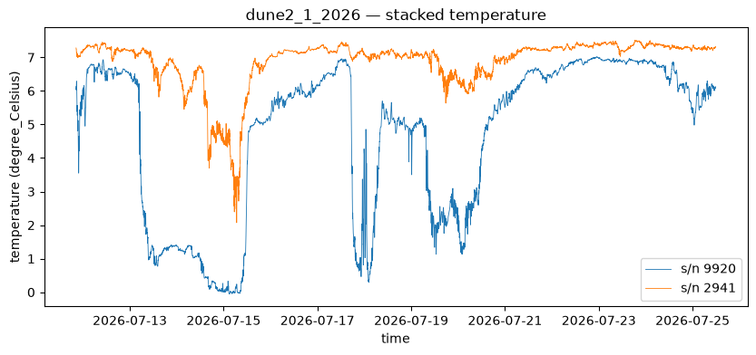
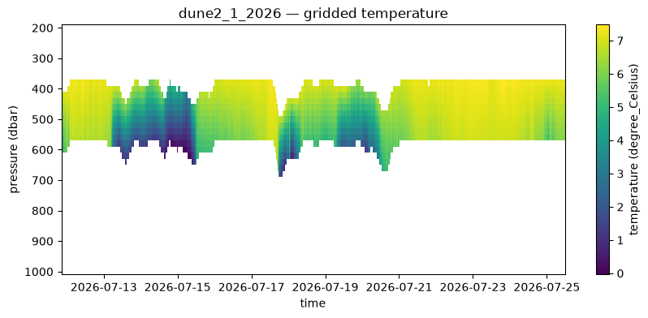

Demo: mooring processing pipeline
End-to-end mooring processing with the shipped oceanarray.pipeline.process entry point, run on the committed dune2_1_2026 test fixture so this notebook reproduces from a clean checkout — no external data or mounted drive needed.
The pipeline stages:
Stage 1 — raw instrument files → CF-NetCDF (
_stage1.nc), faithful to raw.Stage 2 — trim to the deployment window + linear clock-drift correction (
_stage2.nc).Stage 3 — QC flags, pressure interpolation, BEAM→ENU rotation + magnetic declination, derived variables (
_stage3.nc).Stack — interpolate every instrument onto a common time grid (
_stack.nc).Grid — interpolate the stack onto a regular pressure grid (
_grid.nc).
dune2_1_2026 is a two-instrument mooring (a SeaBird MicroCAT and a Nortek Aquadopp).
[1]:
import shutil
import tempfile
from pathlib import Path
import matplotlib.pyplot as plt
import xarray as xr
from oceanarray.pipeline import process
plt.style.use("default")
Set up a scratch workspace
The committed fixtures are read-only inputs. We copy the mooring YAML into a temporary processing directory and run the pipeline there, reading the raw instrument files straight from the fixture tree.
[2]:
repo_root = Path.cwd() if (Path.cwd() / "tests").is_dir() else Path.cwd().parent
raw_dir = (repo_root / "tests/fixtures/raw").resolve() # parent of dune2_1_2026/
proc_fixture = (repo_root / "tests/fixtures/proc/dune2_1_2026").resolve()
mooring_name = "dune2_1_2026"
scratch = Path(tempfile.mkdtemp(prefix="demo_mooring_"))
(scratch / mooring_name).mkdir(parents=True)
shutil.copy(proc_fixture / f"{mooring_name}.mooring.yaml", scratch / mooring_name)
print(f"raw inputs : {raw_dir}")
print(f"proc (scratch): {scratch}")
raw inputs : /home/runner/work/oceanarray/oceanarray/tests/fixtures/raw
proc (scratch): /tmp/demo_mooring_x0kzihlg
Run the pipeline
process runs the requested stages in order. Passing the numbered stages plus "stack" and "grid" takes the mooring from raw files to a pressure-gridded product in one call. (With no stage=, process runs all five stages by default.)
[3]:
ok = process(
mooring_name,
stage=[1, 2, 3, "stack", "grid"],
proc_dir=str(scratch),
raw_dir=str(raw_dir),
force=True,
)
print(f"\npipeline succeeded: {ok}")
Processing mooring: dune2_1_2026
--- microcat 2941 ---
temperature: degC -> degree_Celsius (x1)
Creating output file: dune2_1_2026/microcat/dune2_1_2026_2941_stage1.nc
--- aquadopp 9920* ---
depth: meters -> m (x1)
heading: degrees -> degree (x1)
pitch: degrees -> degree (x1)
roll: degrees -> degree (x1)
temperature: degC -> degree_Celsius (x1)
Creating output file: dune2_1_2026/aquadopp/dune2_1_2026_9920_stage1.nc
Completed processing: 2/2 instruments successful
Starting Stage 2 processing for mooring: dune2_1_2026
Trimming start to deployment time: 2026-07-11T20:30:00.000000
Trimming end to recovery time: 2026-07-25T11:44:00.000000
Trimmed from 19898 to 19635 records
Final time range: 2026-07-11T20:30:01.000000000 to 2026-07-25T11:44:00.000000000
Applying clock drift: -55.0 s over deployment
Trimming start to deployment time: 2026-07-11T20:30:00.000000
Trimming end to recovery time: 2026-07-25T11:44:00.000000
Trimmed from 9960 to 9818 records
Final time range: 2026-07-11T20:30:00.000000000 to 2026-07-25T11:43:05.000000000
Stage 2 completed: 2/2 instruments successful
Stage 3 (pressure interpolation + QC) for: dune2_1_2026
Pressure sources (1): aquadopp 9920 hab=226.0m
Pressure targets (1): microcat 2941 hab=425.0m [no pressure]
--> Processing microcat 2941
WARNING: 2941 (hab=425.0m): extrapolated from aquadopp 9920 (hab=226.0m, static offset=-199.0 dbar) — WARNING: out of range
2941: conductivity_qc=[good=19635]; pressure_qc=[good=0, interp=19635]; salinity_qc=[good=19635]; temperature_qc=[good=19635]
--> Processing aquadopp 9920
BEAM→ENU: magnetic declination = -14.79°
BEAM→ENU: produced east/north/up_velocity, current_speed, current_direction (coord_sys was XYZ, T matrix: applied in stage1 (BEAM→XYZ))
current_direction: degrees -> degree (x1) - written by a pre-0.5.0 stage 1; regenerate to silence
9920: east_velocity_qc=[good=8731, suspect=1087]; north_velocity_qc=[good=8731, suspect=1087]; pressure_qc=[good=9818]; temperature_qc=[good=9818]; up_velocity_qc=[good=8731, suspect=1087]; velocity_beam1_qc=[good=8779, suspect=1039]; velocity_beam2_qc=[good=8779, suspect=1039]; velocity_beam3_qc=[good=8779, suspect=1039]
Stage 3 complete: 2 instrument(s) processed, 2 written
Merging 2 instruments onto 19635-point 60s time grid (dune2_1_2026)
[ 0] aquadopp s/n 9920 hab= 226.0 m dt=120s (stage3)
[ 1] microcat s/n 2941 hab= 425.0 m dt=60s (stage3)
NOTE: 22 stage-3 time-series variable(s) not in STACK_VARS were dropped from the stack: amplitude, battery_voltage, conductivity_qc, day, depth, direction, error_code, hour, magnitude, minute, month, second, speed_of_sound, speed_of_sound_used, status_code, velocity_beam1_qc, velocity_beam2_qc, velocity_beam3_qc, velocity_x, velocity_y, velocity_z, year. Add them to STACK_VARS in mooring/helpers.py to retain them.
tilt_from_pressure[0] s/n 9920 (226 m): ref s/n 2941 (425 m, rope=199 m)
Creating output file: dune2_1_2026/dune2_1_2026_stack.nc
Gridding 2 instruments → 41 pressure levels (200:20:1000 dbar) × 19635 time steps
NOTE: 5 variable(s) excluded from gridding (listed in _GRID_EXCLUDE): heading, pitch, roll, tilt_from_pressure, velocity_flag
Creating output file: dune2_1_2026/dune2_1_2026_grid.nc
pipeline succeeded: True
The stacked product
_stack.nc holds every instrument on one time axis, stacked along N_LEVELS (ordered deep-first). Each level keeps its own pressure record.
[4]:
out = scratch / mooring_name
stack = xr.open_dataset(out / f"{mooring_name}_stack.nc", engine="netcdf4", decode_timedelta=False)
print("dims:", dict(stack.sizes))
print("variables:", list(stack.data_vars))
fig, ax = plt.subplots(figsize=(10, 4))
for lev in range(stack.sizes["N_LEVELS"]):
serial = str(stack["serial"].values[lev]) if "serial" in stack else f"level {lev}"
ax.plot(stack["time"], stack["temperature"].isel(N_LEVELS=lev), lw=0.6, label=f"s/n {serial}")
ax.set_xlabel("time")
ax.set_ylabel("temperature (degree_Celsius)")
ax.set_title(f"{mooring_name} — stacked temperature")
ax.legend()
plt.show()
dims: {'time': 19635, 'N_LEVELS': 2}
variables: ['temperature', 'temperature_qc', 'salinity', 'salinity_qc', 'conductivity', 'pressure', 'pressure_qc', 'east_velocity', 'north_velocity', 'up_velocity', 'current_speed', 'current_direction', 'east_velocity_qc', 'north_velocity_qc', 'up_velocity_qc', 'heading', 'pitch', 'roll', 'sigma0', 'velocity_flag', 'tilt_from_pressure', 'tilt_pressure_ref_hab', 'tilt_pressure_ref_serial', 'serial_number', 'InstrDepth', 'clock_offset', 'start_time', 'end_time', 'clock_drift_seconds', 'magnetic_declination', 'SENSOR_TEMP_2941', 'SENSOR_CNDC_2941']

The pressure-gridded product
_grid.nc interpolates the stack onto a regular pressure axis — a (time, pressure) field per variable, ready for sectioning.
[5]:
grid = xr.open_dataset(out / f"{mooring_name}_grid.nc", engine="netcdf4", decode_timedelta=False)
print("dims:", dict(grid.sizes))
print("variables:", list(grid.data_vars))
fig, ax = plt.subplots(figsize=(10, 4))
m = ax.pcolormesh(grid["time"], grid["pressure"], grid["temperature"].T, shading="auto")
ax.invert_yaxis()
ax.set_xlabel("time")
ax.set_ylabel("pressure (dbar)")
ax.set_title(f"{mooring_name} — gridded temperature")
fig.colorbar(m, ax=ax, label="temperature (degree_Celsius)")
plt.show()
stack.close()
grid.close()
dims: {'time': 19635, 'pressure': 41}
variables: ['temperature']

The same five stages run on any mooring with a *.mooring.yaml and raw instrument files laid out under raw_dir; point raw_dir/proc_dir at a cruise tree to process real data.